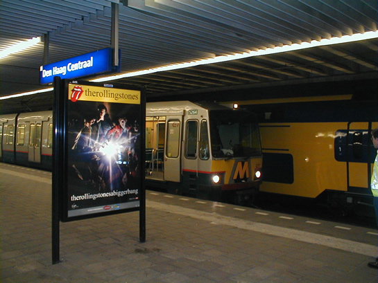
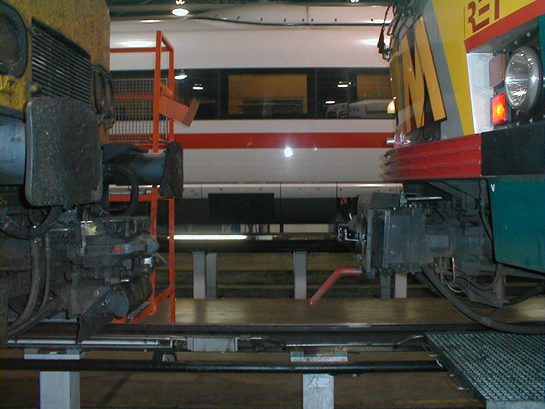

5264 maakt laatste proefritten en meer nieuws...
- zondag 07 december 2008 18:08
- Geschreven door Joachim
Rijtuig 5264 maakte afgelopen nacht de allerlaatste proefritten op de NS-sporen. Dit maal werd er tot twee keer toe gependeld op de gehele Hofpleinlijn, namelijk tussen de stations Den Haag Centraal en Rotterdam Hofplein v.v. Er werd vertrokken vanuit de Nedtrain Werkplaats in Leidschendam, alwaar het metrosneltramrijtuig al enkele maanden verblijft. Alle beproevingen en testen zijn de afgelopen nachten goed doorstaan. Wanneer het rijtuig terugkeert naar remise Waalhaven is tot op heden onbekend. Voorlopig staan er géén nieuwe proefritten op het programma.

Rijtuig 5264 naast een wat groter VIRM-treinstel van de NS op station Den Haag Centraal.

Niet op CW Kleiweg, maar op station Kleiweg.

Terug in de werkplaats, de 5264 werd voor de foto geparkeerd naast de ICE. Achter het rijtuig stond vannacht een mDDM-motorwagen van de NS.
 Bekijk alle foto's van de proefrit van dinsdag- op woensdagnacht op De Digitale Tram
Bekijk alle foto's van de proefrit van dinsdag- op woensdagnacht op De Digitale Tram
Extra alertheid
Vandaag zijn de NS en andere grote vervoersbedrijven, zoals RET en GVB, gevraagd extra alert te zijn op verdachte zaken in en om voertuigen en in, op en rond stations en haltes. Minister Donner van Justistie heeft dit besloten. Volgens de Nationaal Coördinator Terrorismebestrijding is er geen sprake van een concrete dreiging, maar er is wel voldoende aanleiding om veiligheidsmaatregelen te nemen in de metro's van Rotterdam en Amsterdam, evenals in en om de treinen van NS.
De maatregelen zijn niet altijd zichtbaar voor de reizigers, er wordt meer toezicht gehouden op de metrostations in Rotterdam, maar ook camerabeelden worden direct bekeken. Via het DRIM-informatiesysteem op alle stations worden reizigers verzocht extra alert te zijn op verdachte zaken en dit direct te melden aan aanwezig metropersoneel.
Vrouw valt om in metrorijtuig
Op station Oosterflank verloor een oudere vrouw omstreeks 12.40 uur haar evenwicht in metrostel 5404, vermoedelijk door dat deze nogal krachtig optrok. Voor de zekerheid werd een ambulance gestuurd naar station Alexander, alwaar de combinatie (5404-5409 als wagendienst 557), tussen 12.40 uur en 13.00 uur geparkeerd werd op spoor 2. Hierdoor was het overig metroverkeer genoodzaakt enkelspoors te rijden via spoor 1 tussen wisselcomplex Prinsenlaan en Alexander 1 v.v. De vertraging liep op tot ongeveer 10 á 15 minuten.
Doordat de AHOB's langer dichtbleven dan gebruikelijk (i.v.m. het rijden van enkelspoorbedrijf en de aanvraag van de AHOB door de stilstaande wagendienst 557) ontstond een grote drukte op de nabijgelegen voetgangerskruising Alexander. Een andere oudere vrouw, die rennend de metro probeerde te halen, ging mede door de drukte onderuit en liep een bloedende neus en lip op. Zij werd ter plaatse behandeld door de reeds aanwezige GGD.
Aanrijding Hoofdweg
Gistermiddag vond er omstreeks 14.55 uur wederom een aanrijding plaats op de Hoofdweg. Een auto kwam in botsing met een metrosneltram, er was slechts sprake van blikschade. Hoe de aanrijding heeft kunnen gebeuren, welk metrorijtuig het betrof en op welk spoor de aanrijding plaatsvond, is niet bekend.
Op 29 augustus vond er ook een aanrijding plaats tussen een metrorijtuig en een auto, hierbij was er sprake van blikschade. Het betrokken metrorijtuig, 5205, is inmiddels weer in dienst nadat de schade aan de koppeldoos was hersteld.
Road Races
Komend weekend vindt het evenement "Rotterdam Road Races" plaats. Dit evenement bevat de skate-marathon "Rotterdam On Wheels" en de halve marathon (voor hardlopers). Hoewel deze evenementen beiden zondag plaatsvinden, worden er op zaterdag al voorbereidingen getroffen. Hierdoor kunnen op deze dag diverse tram- of buslijnen een andere route rijden.
Op zondag rijden o.a tramlijn 20, 23 en 25 niet hun normale route, tevens is dit het geval voor tramlijn 8. Een overzicht van alle omleidingen en wijzigingen tijdens "Rotterdam Road Races" is te vinden op ret.nl.